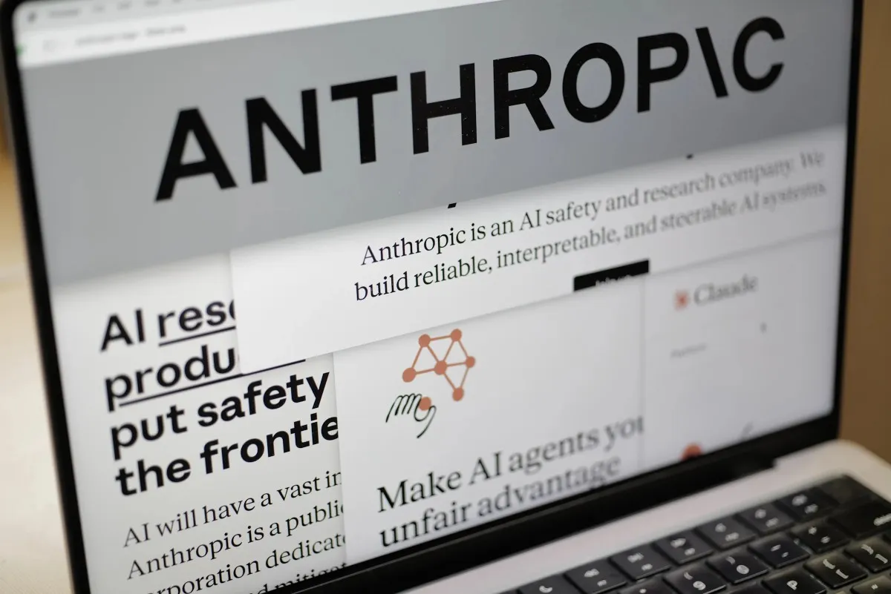

Breaking News
 March 4
March 4
by James Thornton
Anthropic’s refusal to let its AI be used in autonomous weapons has sparked a major debate over ethics, security, and the future of military AI.
Anthropic's position on the U.S. military's use of artificial intelligence is shifting, impacting the competitive landscape among leading AI companies. This also brings up the question of whether chatbots could actually be involved in acts of war. The situation intensified when the Trump administration ordered government agencies to cease using Anthropic's Claude chatbot, designating the company as a supply chain risk. The decision came after Anthropic CEO Dario Amodei refused to remove safeguards that prohibit the technology from being utilized in autonomous weaponry or domestic mass surveillance. The Pentagon has six months to phase out the company's military applications. Anthropic has stated that it will take the government to court once it receives formal notice of penalties. Amodei justified the company's stance, claiming that frontier AI systems are insufficient to power completely autonomous weapons, and that giving such technology may endanger warfighters and bystanders. Until recently, Anthropic had received approval for use in sensitive military systems and collaborated with data analysis firm Palantir and other defense firms
This story prompts a larger, still-unanswered question: what are the limits of AI's role in warfare? Governments want to use AI to win wars, and tech companies need to figure out what to do. Anthropic's refusal to allow its technology to be used in autonomous weapons highlights the conflict between ethical concerns about machines making life-and-death decisions and the goals of national security.
The uproar has ignited a broader discussion among military and human rights specialists about the reliability of generative AI in critical military decisions. Missy Cummings, a former Navy fighter pilot and current head of George Mason University's robotics and automation lab, argues that the large language models behind chatbots such as Claude are prone to errors and fabrications, making them unsuitable for safely overseeing weapon systems. During an AI conference, she proposed that governments should ban the deployment of generative AI in the command and control of military actions. Cummings cautioned that deploying these technologies without strict human oversight could lead to civilian deaths or accidental attacks on allies. She further criticized the AI industry's history, particularly its propensity to exaggerate the technology's abilities in marketing campaigns. Cummings stressed the importance of human oversight in AI systems, regardless of how they are used. She insisted that operators must always verify the systems' outputs before taking any further action. The present situation, she explained, stems from a mix of exaggerated claims from corporations and the government's rapid adoption of new technologies within its military strategies.
OpenAI's recent partnership with the Department of Defense, aimed at supplying AI technologies, drew some fire. The deal's terms, critics argued, contained potential weaknesses that could be exploited for surveillance on American citizens. OpenAI subsequently sought to quell the concerns, stating its technology wouldn't be employed for domestic monitoring of US individuals.
Furthermore, the company emphasized that its tools wouldn't be available to intelligence agencies like the NSA unless a separate agreement was established. CEO Sam Altman admitted the backlash, conceding the company rushed the rollout. He noted the complexities of applying AI to national security, emphasizing the need for thoughtful communication. Altman told employees the technology isn't yet suitable for many applications, and the company will keep collaborating with the Pentagon to establish safeguards. The episode has intensified the rivalry among leading AI developers and raised concerns about the speed at which the technology should be integrated into national security operations.
The conflict with the Pentagon unexpectedly improved Anthropic's image in the public. Claude momentarily surpassed ChatGPT as the most downloaded phone app in the United States, according to market research firm Sensor Tower.It became the number one free software on Apple's software Store and rose to near the top of Google's Play Store rankings. Following the dispute, Anthropic recorded its highest single-day sign-up rate. Public sentiment was evident offline, too, as supportive messages appeared outside the company's San Francisco headquarters. The spike in interest came after a backlash from consumers. They reacted negatively to OpenAI's announcement of a deal with the Pentagon, a deal that would allow government agencies to utilize its models in classified environments. The backlash damaged ChatGPT's standing with the public and helped propel Claude's surprising success, highlighting how the conversation around military AI impacts public perceptions of major tech companies.
James Thornton is a U.S. business reporter covering markets, technology, and economic policy.